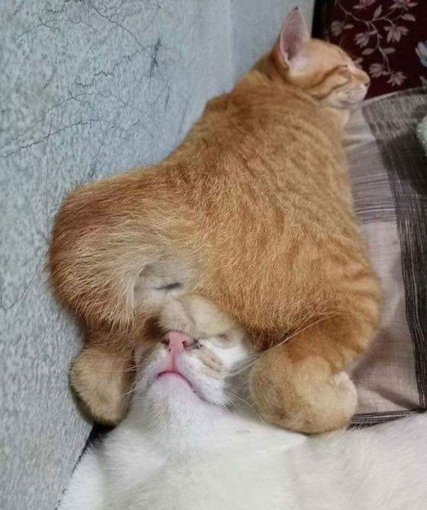

About Sleepy
Sleepy gets his name from his perpetual drowsiness. He is typically less concerned about what's going on around him, and more so on taking a nap.
Sleepy gets his name from his perpetual drowsiness. He is typically less concerned about what's going on around him, and more so on taking a nap.